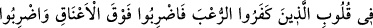
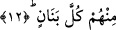

Allah Teâlâ, müminlere yardım ederek başkalarına yardımcı olmayı teşvik etmiştir. O
halde kâmil mümin, gücü yettiğince mümin kardeşine yardımcı olur.
Hikaye edilir ki Sâsânîlerden Fîrûz b. Yezdücerd b. Behram melik olunca halkına
adalet ve insafla muamele etti. Krallığının yedinci yılında hiç yağmur yağmadı. Bunun
üzerine bütün beldelere elçiler gönderip oralardaki yiyeceklerin zenginler ile fakirler
arasında eşit olarak paylaştırılmasını emretti. Hatta zenginlerin fakirleri daha yakından
koruyup kollamaları için açlıktan bir fakirin öldüğü vakit onun yerine zenginlerden
birinin öldürüleceğini bildirdi.
Hâfız der ki:
Ey zengin adam! Yoksulun gönlünü kazan
Çünkü altın mahzeni ile gümüş hazinesi kalmayacak
Allah’ım, ecel gelip çatana kadar bizi cimrilik ve tembellikten koru!
12. Hani Rabb’in meleklere: “Muhakkak ben sizinle beraberim; haydi iman
edenlere destek olun. Ben kâfirlerin yüreğine korku salacağım; vurun boyunlarına!
Vurun onların bütün parmaklarına!” diye vahyediyordu.
“Hani Rabb’in meleklere:” yani ey Muhammed, Rabb’inin meleklere şöyle vahyettiği
vakti hatırla: “Muhakkak ben sizinle beraberim” yani, sabit kılmak husûsunda yardım
etmek ve muvaffak kılmak sûretiyle sizinle berâberim demektir. Yoksa “Üzülme, Allah
bizimle beraberdir.” (et-Tevbe, 9/40) âyetinde olduğu gibi burada korkunun
giderilmesi kastedilmemiştir. Çünkü meleklerin kâfirlerden korkusu yoktur ki onlara:
“Ben sizinle beraberim, sakın onlardan korkmayın.” buyurulsun.
Ayetteki (
) “berâber” kelimesinden anlaşılan meleklerin Allah tarafından
izlendiğinin hissettirilmesi (metbû‘ olması), müminleri bizzat sebat ettirenlerin onlar
olması bakımındandır. Dolayısıyla bu yönden asalet onlara aittir. Nitekim “Allah
sabredenlerle beraberdir.” (el-Bakara, 2/253) ve benzeri âyetlerde de aynı durum söz
konusudur.
“Haydi iman edenlere” onları müjdelemek ve sayılarını çoğaltmak gibi kalblerini
takviye eden şeylerle “destek olun.” Destek olup sabit kılmak (et-tesbît), harp